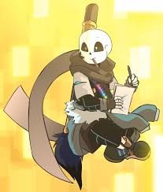

Os Star Sanses são um grupo de defensores Out!Code que se esforçam para proteger o Multiverso ; e seus habitantes e AUs ( Universos Alternativos ), de danos. A equipe consiste principalmente de Ink!Sans , Dream!Sans e UnderSwap!Sans .
Esta equipe é a equipe inimiga dos Bad Sanses ; um grupo de destruidores Out!Code que visam causar estragos no Multiverso e suas UAs, além de ser a contraparte oposta dos Fallen Sanses .
| Guardiões | ||
|---|---|---|
| Dream | Ink | Swap |
| |
 | |
| Curiosidade | curiosidade ink | curiosidade swap |
Ink!Sans estava tentando formular um plano que lhe daria vantagem contra Error!Sans e as pessoas que visam destruir o Multiverso e seus AUs. Ele eventualmente teve a ideia de formar uma equipe de pessoas como ele que buscam defender o Multiverso de pessoas como Error.
Para fazer isso, ele viajou para DreamTale e libertou Dream!Sans de sua prisão de pedra depois de ficar preso nela depois de centenas de anos. Depois de fazer isso, ele informou o último sobre as coisas que seu irmão e Error estavam fazendo; para o horror deles. Dream, querendo agradecer a Ink e também ajudar o Multiverso, concordou em se juntar a essa equipe dele.
Com Dream se juntando à equipe recém-formada, Ink partiu para encontrar um Sans de uma Linha do Tempo UnderSwap e convidá-lo para a equipe. Swap!Sans, querendo ajudar o Multiverso e também se tornar um herói para todos os habitantes, imediatamente concordou em se juntar à equipe.